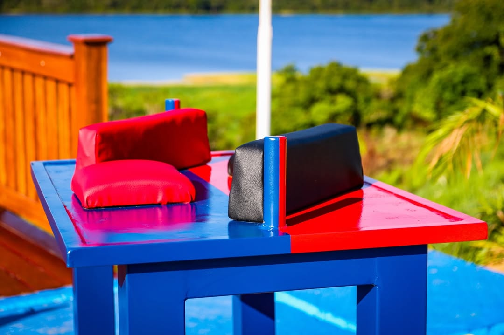
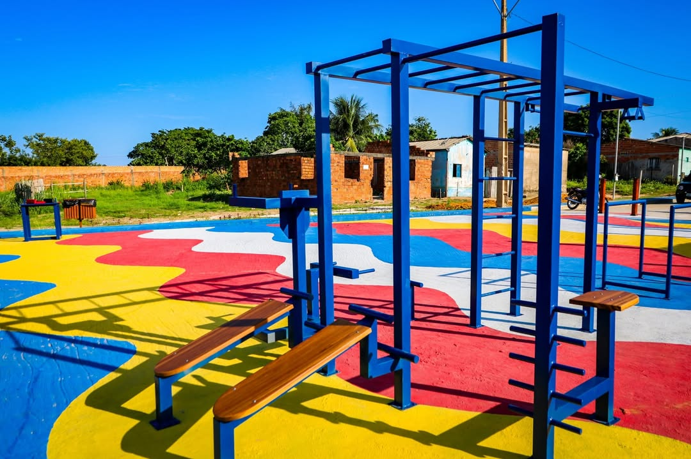
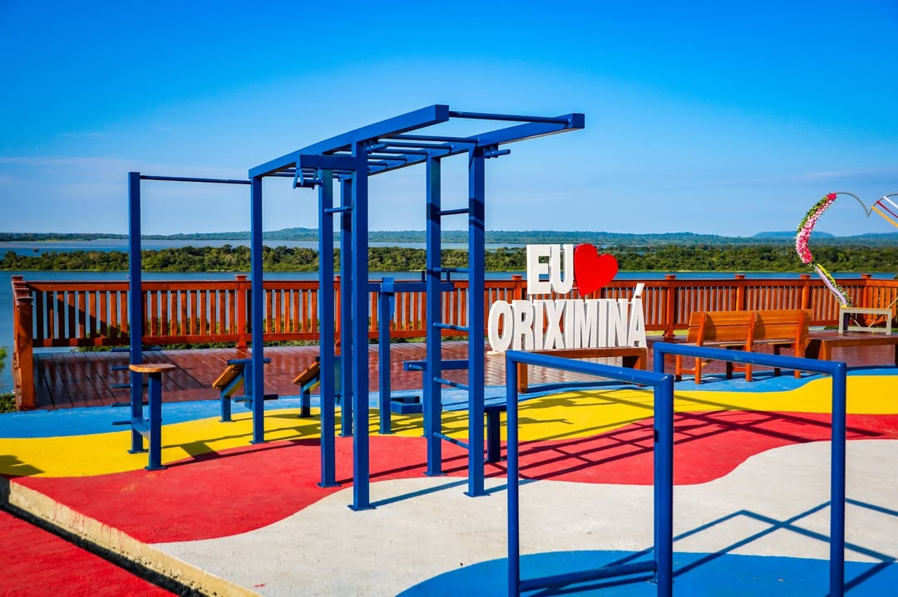
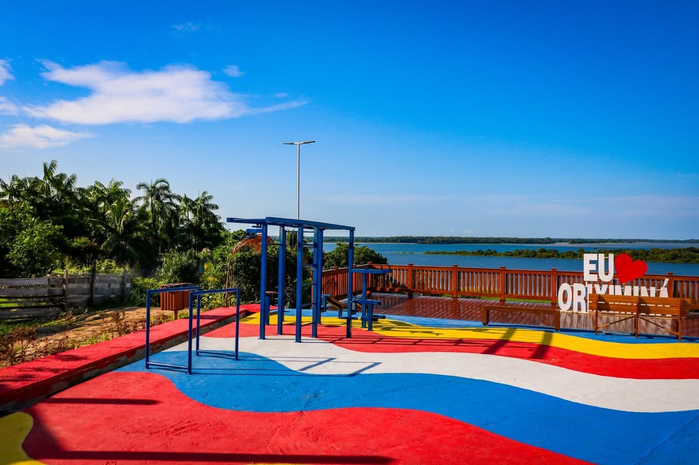
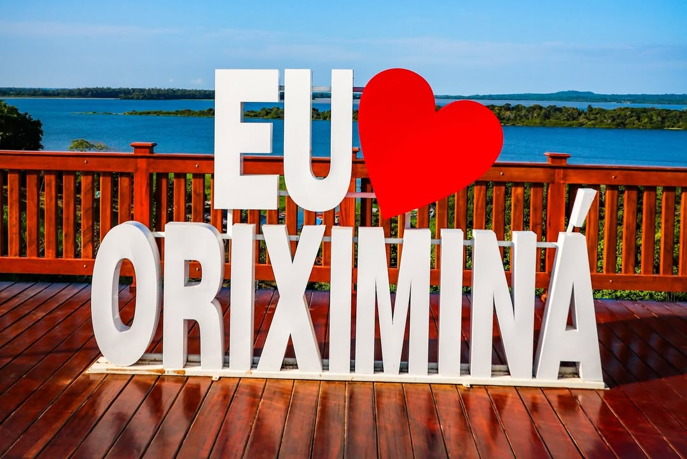

O Mirante Novo Horizonte oferece uma vista panorâmica da cidade de Oriximiná, sendo um ponto ideal para contemplação da paisagem, registro fotográfico e apreciação do pôr do sol.
Galeria de Fotos





Serviços nas proximidades
Alimentação
Hospedagem
Orientações ao visitante
Recomenda-se visitar em horários de boa visibilidade, evitar permanência em períodos noturnos e respeitar as áreas de preservação ambiental.